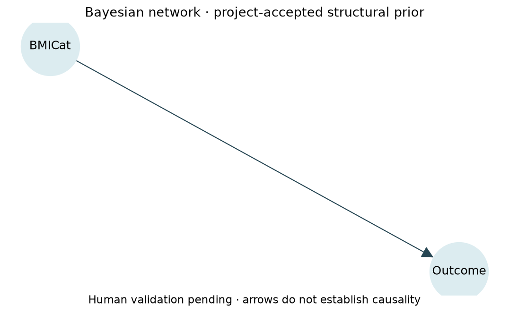
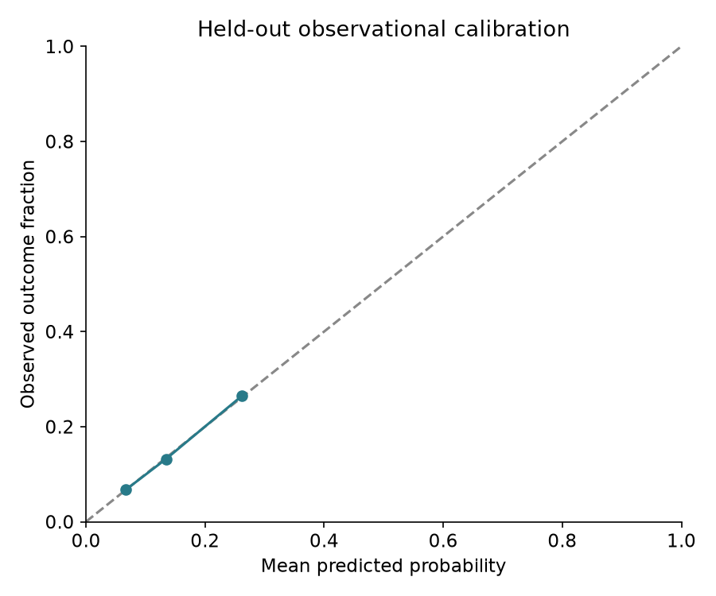

Biomedical evidence / probabilistic modelling
Diabetes evidence, explored
CDC BRFSS 2015 · real observations
Human validation: pending. The graph is a project-accepted structural prior. Causal validity is not established. Estimates are unweighted respondent probabilities, not population prevalence or clinical advice.
Model and data
401,327 observations retained. Only the imported BMI → Outcome relationship is included in the default model. Outcome combines self-reported prediabetes and diabetes.

Explore a BMI category
Observation selects respondents in a category. Intervention replaces the BMI mechanism in the assumed model. Equal results in this sparse graph follow from its lack of confounders; they do not prove absence of real confounding.

Held-out prediction
Log loss: 0.39641 · Brier score: 0.12048. These assess observational prediction, not causal accuracy.

Calibration is assessed only in populated prediction bins. Higher-risk ranges without predictions are unmeasured; good observed calibration is not causal validation.